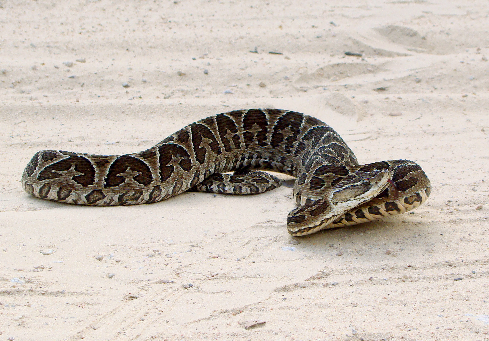
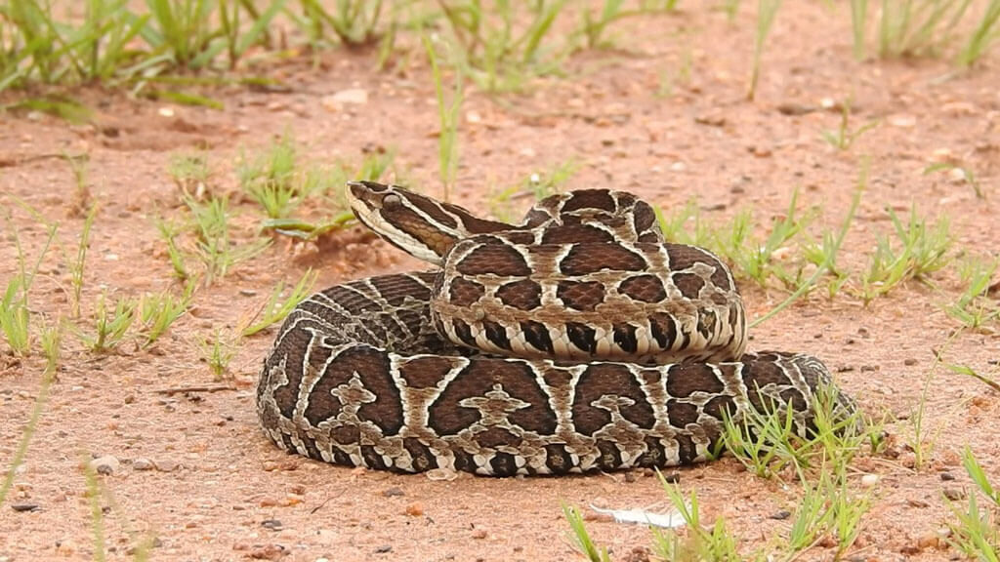
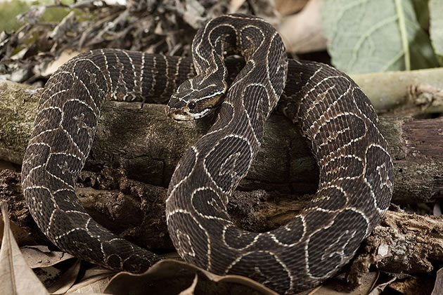
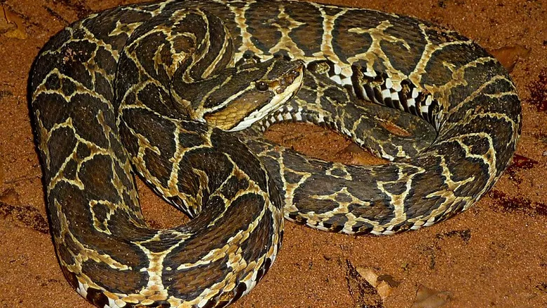

Urutu






INFORMAÇÕES SOBRE O ANIMAL
- Nome Científico: Bothrops alternatus
(Nicolas Laurent, 1804) - Nomes Populares: Conhecida como "urutu", "jararaca" ou "urutu-cruzado"
Classificação Biológica
- Domínio: Eukaryota
- Reino: Animalia
- Filo: Chordata
- Classe: Reptilia
- Ordem: Squamata
- Família: Viperidae
- Gênero: Bothrops
- Espécie: B. alternatus
Nutrição Geral e Hábitos Alimentares
- Tipo de Nutrição: Carnívora
- A cobra Urutu é um predador que se alimenta principalmente de pequenos mamíferos, aves e outros répteis. Utiliza sua habilidade de camuflagem para emboscar suas presas e possui veneno potente para subjugá-las.
Morfologia
- Pele e Corpo
A Urutu possui uma coloração variada, que pode incluir tons de marrom, cinza e verde com padrões de manchas cruzadas. Seu corpo é robusto e adaptado para camuflagem em seu habitat.
Órgãos Respiratórios
Seu sistema respiratório é composto por narinas, faringe, laringe, traqueia e pulmões, adaptados para respirar ar.
Escamas
Possui escamas dorsais que são ásperas e ajudam na camuflagem e na locomoção. Comportamento
- A Urutu é uma cobra de comportamento geralmente solitário e noturno. Passa a maior parte do tempo escondida sob folhas ou troncos. É uma espécie territorial e pode mostrar comportamento agressivo se se sentir ameaçada.
Ocorrência
- A Urutu é encontrada em áreas de floresta tropical e subtropical na América do Sul, principalmente no Brasil, Argentina e Paraguai. Prefere habitats com vegetação densa e solos úmidos.
- Mapa de Ocorrência
Reprodução
- Sistema de Acasalamento: A Urutu realiza o acasalamento na estação chuvosa, e as cópulas ocorrem no solo.
Reprodução ao Longo do Ano: A reprodução tende a ocorrer no período de maior disponibilidade de recursos.
Postura de Ovos: A fêmea deposita ovos em locais escondidos, e os filhotes nascem em um período de incubação de aproximadamente 2 meses. Os filhotes são independentes após a eclosão.